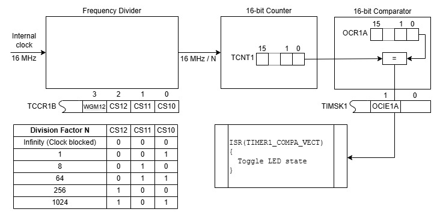
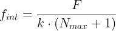
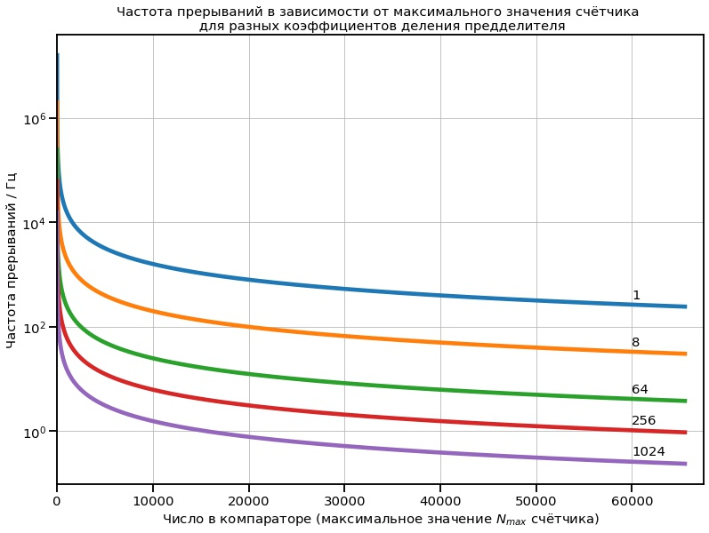
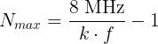

В предыдущем этюде о режиме таймера ничего не говорилось — при инициализации (TCCR1A = 0; TCCR1B = 0;) включался "обычный" (Normal) режим и вся работа шла в нём. Однако у таймера 16 режимов работы, они задаются четырьмя битами WGM10-WGM13, которые разбросаны по двум регистрам: WGM10 и WGM11 находятся в TCCR1A, WGM12 и WGM13 в TCCR1B. Этот этюд посвящён режиму CTC (англ. Clear Timer On Compare Match, сброс счётчика таймера при совпадении в сравнении), который включается установкой бита WGM12 и, как в предыдущем этюде, в комбинации с предделителем позволяет формировать некоторый набор частот, но несколько отличающимся способом.
В предыдущем этюде счётчик, работая в режиме Normal, считал до своего максимума; переполнялся, что вызывало прерывание; в обработчике прерывания в счётчик записывалось некоторое число; всё это циклически повторялось. Каждый раз счёт начинался с записанного числа, соответственно, частота прерываний определялась им и коэффициентом деления предделителя. В режиме CTC счётчик считает с нуля, значение счётчика сравнивается с числом, заранее записанным в компаратор, при совпадении возникает прерывание, а счётчик сбрасывается; цикл повторяется. Похоже на то, как в Normal, но есть отличия, например, не нужно каждый раз заново записывать начальное значение в счётчик.
На чертеже показана конфигурация, использующая Таймер 1 в режиме CTC для возбуждения прерываний с заранее заданной частотой. Внутренний тактовый сигнал 16 МГц поступает на вход предделителя, коэффициент деления которого задаётся тремя младшими битами регистра TCCR1B. С предделителя сигнал поступает на вход 16-разрядного счётчика, и его значение (регистр TCNT1) непрерывно сравнивается со значением Nmax, заранее записанным в компаратор (с регистром OCR1A). При совпадении этих значений (1) счётчик сбрасывается; и (2) генерируется прерывание по совпадению, если это разрешено битом OCIE1A в регистре TIMSK1. Получив запрос прерывания, микроконтроллер выполняет программу обслуживания прерывания (Interrupt Service Routine) ISR(TIMER1_COMPA_vect), в которой, например, управляет светодиодом.

Добавить в программу из предыдущего этюда возможностью работы в режиме CTC и исследовать этот режим.
Чтобы работать в CTC, надо (1) включить этот режим (WGM12=1); (2) записать число, с которым будет сравниваться счётчик, в OCR1A; (3) написать обработчик прерывания по совпадению (ISR(TIMER1_COMPA_VECT)); (4) разрешить прерывания по совпадению (OCIE1A=1).
В программу из предыдущего этюда добавлена поддержка команды m=значение: m=0 соответствует режиму Normal, m=1 режиму CTC. Сама команда лишь устанавливает признак режима, а фактическая смена режима происходит при обработке команды c=значение, которая задаёт, в зависимости от режима, либо начальное значение счётчика, либо значение в компараторе.
Счётчик считает импульсы тактовой частоты F, делённой на коэффициент k деления предделителя. Если в компаратор записано число Nmax, то счётчик с исходным нулевым состоянием достигнет состояния Nmax через Nmax входных импульсов, а (Nmax+1)-й импульс сбросит счётчик и вызовет прерывание, после чего процесс повторится. Таким образом, частота прерываний в режиме CTC:

Зависимость частоты прерыаний от начального значения при разных коэффициентах деления показана на графике:

Программа обслуживания прерывания при каждом вызове считывает бит 5 из PORTB и записывает обратно его инвертированное значение, соответственно, при каждом прерывании светодиод либо зажигается, либо гаснет, и результирующая частота мигания вдвое ниже частоты прерываний.
В этом этюде предусмотрена возможность установки коэффициента деления (команда d=двоичное значение трех младших битов TCCR1B, например, d=100) и максимального значения счётчика (команда c=десятичное максимальное значение счётчика, например, c=10000, диапазон допустимых значений 0-65535). Команды вводятся в мониторе последовательного порта в Arduino IDE. Значение Nmax для Arduino с тактовой частотой 16 МГц для заданной частоты f мигания при выбранном коэффициенте k деления можно рассчитать по формуле:

.Предположим, что требуется получить частоту мигания 1/2 Гц (ей соответствует длительность свечения и длительность паузы 1 с). Частота прерываний для этого случая 1 Гц. Из графика видно, что получить такую частоту можно при коэффициенте деления 256 или 1024. Расчёт даёт Nmax=62499 при k=256 и Nmax=15624 при k=1024.
Как и в предыдущем этюде, линии на графике лишь выглядят сплошными, а реально представляют собой множество изолированных точек, поэтому не для всякой заданной частоты прерываний или частоты мигания существует значение Nmax. Формальный расчёт возможен для любой ненулевой частоты, но результат может не оказаться целым положительным числом, находящимся в пределах 0-65635, что означает невозможность получить заданную частоту в описанной конфигурации. Например, невозможно получить частоту с первой цифрой 3: 300 Гц, 3 кГц и т.п.
В этой таблице приведены начальные значения Nmax для получения некоторых частот — например, целых, заканчивающихся на 0 и на 5; они получены формальным расчётом, а фактические значения на высоких частотах могут быть ниже расчётных из-за затраты времени на обработку прерывания.
Команда ?= выведет общую информацию о программе и командах. Команда ?=команда выведет конкретную информацию о команде. Например, в этом этюде ответ на команду ?= указывает на поддержку команд m, d и c. Об этих командах и их параметрах можно узнать, соответственно, по команде ?=m, ?=d и ?=c.
Текст программы содержится в файле Ind_y_Ardu.ino, который можно получить с Github по ссылке.
Файл Jupyter Notebook с кодом на python для расчёта частот и построения вышеприведённого графика 085_Freqs.ipynb доступен с Github по ссылке.
Как вариант, для получения файла можно взять с Github весь репозиторий цикла "Ардуино и индикаторы" и выполнить соответствующую команду:
git restore -s builtin23 -- Ind_y_Ardu.ino
git restore -s builtin23 -- ipynbs/085_Freqs.ipynb
Соответствующие файлы в рабочей области будут перезаписаны требуемой версией.